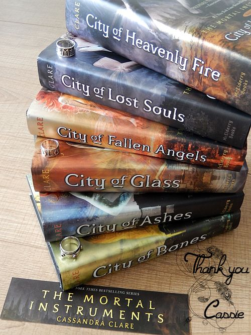
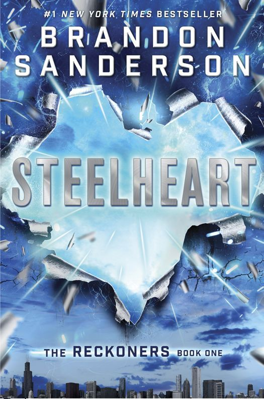
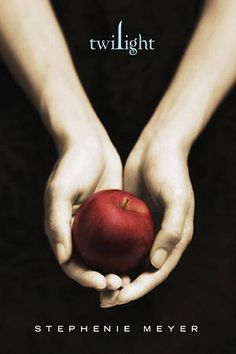
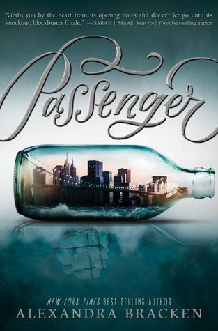
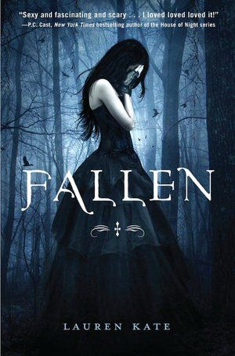
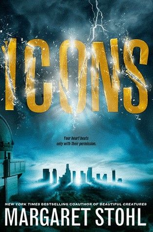

2.) The Mortal Instruments trilogy by Cassandra Clare
Teen Wolf, Supernatural, Grimm, and the number of characters in War and Peace all slammed into something that shouldn't be published (I am very generous in saying this). Clary as the main is as annoying as a 15-year old can get, the lack of research is astounding, and the six books can be cut into three novels if the filter words were lessened. Clary wants to find her mother and ends up usually forgetting that when she sees Jace, the cocky and conceited love interest. The rest of the characters are forgettable. We have Simon, Clary's bestfriend and SURPRISE AGAIN has a crush on her, Alec, the one who hates Clary and is a hobo when it comes to dressing up, Isabelle, the femme fatale who is Clary's go-to when she needs someone to help her dress up. One word for this series: gah.

3.) Steelheart by Brandon Sanderson
One thing I hate about this book is the lack of 3D characters. David, the main character, is obviously the awkward nerd who has the knowledge to save the world a.k.a a Gary Stu. Megan, his love interest, is the sarcastic femme fatale with a hidden soft heart. The rest of the characters are just cardboard cutouts. Nobody has any redeeming qualities. Everyone is a trope. The scenes are tropes. The words are tropes. The reality in this book is questionable, considering that Sanderson (the author) was paying homage to comics. Kudos to the thrill, and of course, the weaknesses of Epics (the people with powers) and how their powers are connected to their affinity for doing evil.

4.) Twilight by Stephanie Meyer
I utterly regret reading this book. Bella can be replaced by a stick, Edward is this discoball of a love interest, and Jacob is one of the most forgettable characters I have ever read. Worse, the supporting characters are one-dimensional, and they serve little to no purpose aside from being in filler scenes. The romance hints at awful abuses. The characters had no arc whatsoever, Meyer blatantly disobeyed her own book's rules , and there are numerous times that the author cheated the narration despite the book being written in first person POV. This book can be an author self-insert, which is considered one of the most disgusting mistakes in writing if done wrong (which Meyer did). This book is considered the epitome of bad writing, and I will not deny. I can't believe I read this. Save me from my suffering.

5.)Passenger by Alexandra Bracken
For the record, this book is actually interesting. Music! Time travel! Pirates! Yet somehow, this book just fell flat for me. The plot felt too contrived, too coincidental, and the romance happened too fast . There's lengthy descriptions about love, deviating from the storyline. Etta, the main, didn't give me any moments where I could root for her, and her story (and the book) seemed like a copy of The Mortal Instruments, which I found derogatory to the writing industry. The world building would have been one of the best, but there were simply too much details to keep track. This book came out quite nice for female rights and minorities though, giving chances for new voices that are rarely heard.

6.)Fallen by Lauren Kate
What. Kate thinks the readers are idiots. The prologue gives everything off: that Lucinda (the main) is reincarnated, and there are black shadows that are ready to take her away to wherever. Lucinda Price is useless, pathetic, plain stupid, and couldn't take a hint. Daniel Grigori is a smoldering character that was painful to read, and the school (whatever it is) was just a copy paste of a jail and a mental institute. The writing in this novel was terrible and digusting. The editing was even worse. The sentences were choppy, flowed poorly, and the word choices were sometimes just plain weird. Research was lacking, and this book was another copy of The Mortal Instruments. Not again.

7.) Icons by Margaret Stohl
Icons is all about aliens, powers, and a cringy romance that left me questioning my own sanity. Dol the Main is finnicky and whiny without making any proper way of dealing out what she really wants to happen. The two other boys, Lucas and Ro, are generic love interests in the SURPRISE AGAni AGAN WHEN WILLT HIS STOP love triangle- hot, brooding, and in love with the same person. There was only one character I may have liked, and I still have thoughts on whether she deserved being with the aforementioned liabilities. The deaths in this book (more than 2?) didn't give me a sad feeling, and even reading Dol's feelings on them made me doubt her personality. She also has a bad habit of switching from one boy to the other, and reading this for more than a minute made me want to puke. Choppy sentences, too much words for dramatic effect, stupid characters. Bad book.